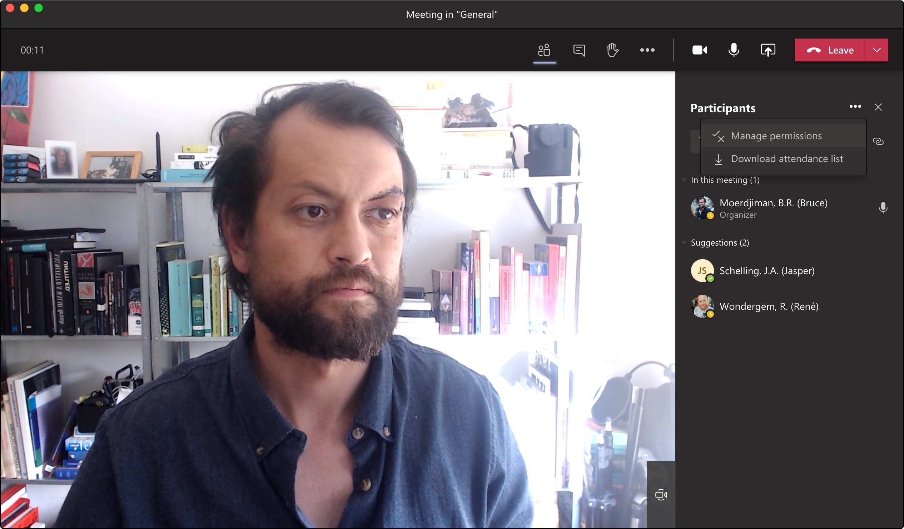
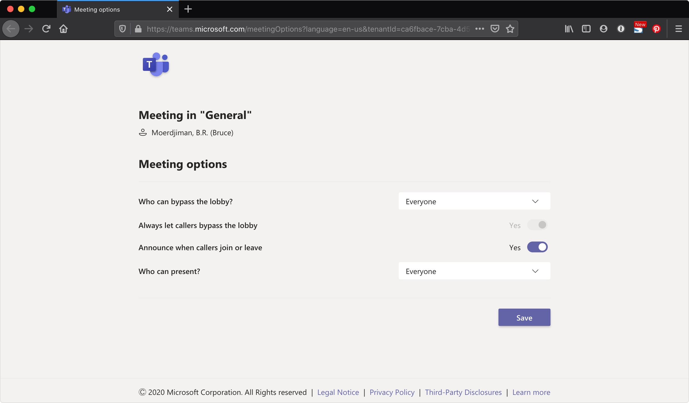
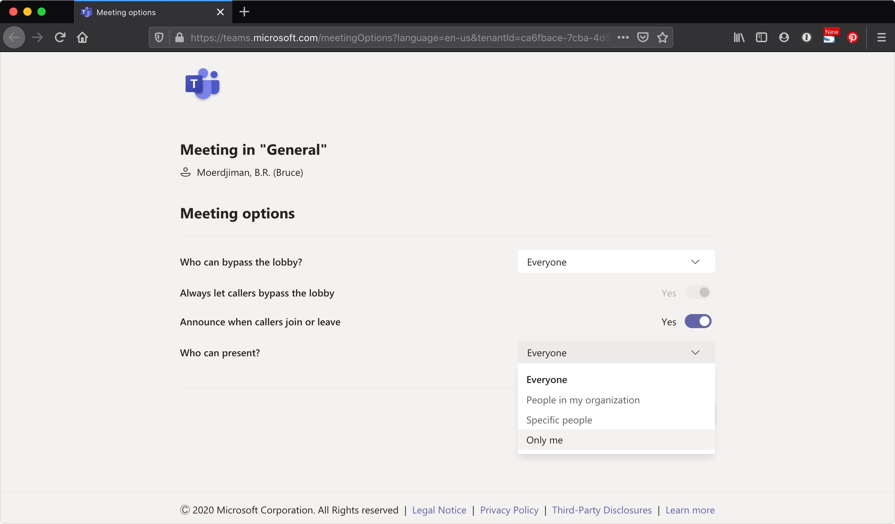
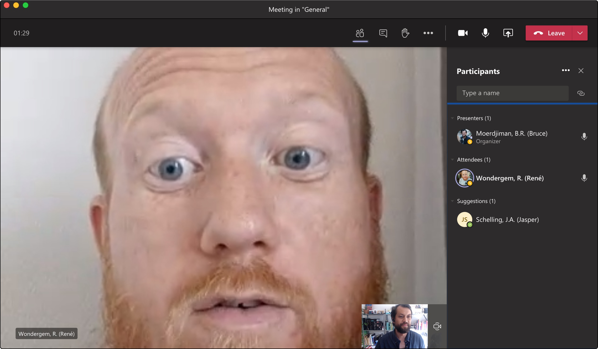
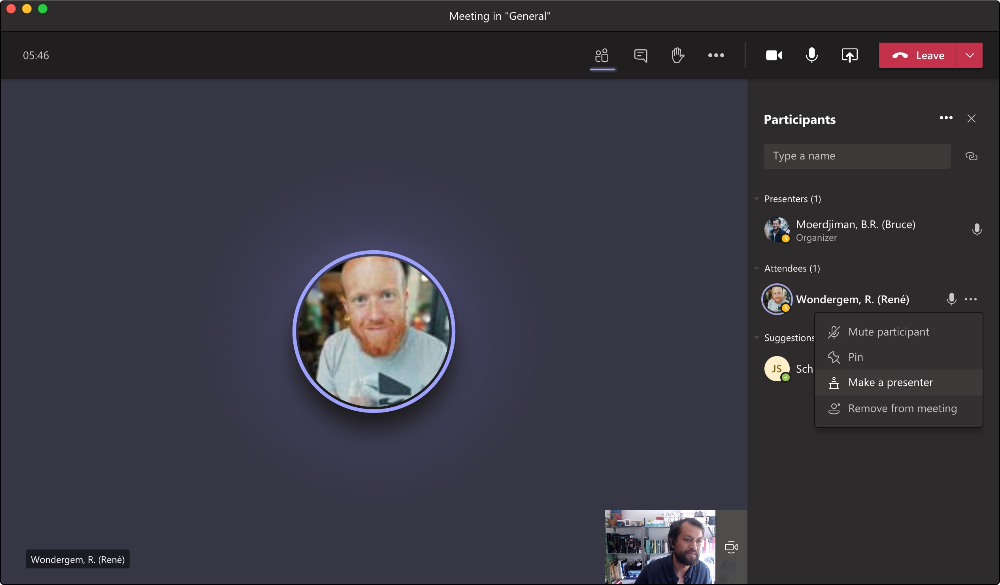
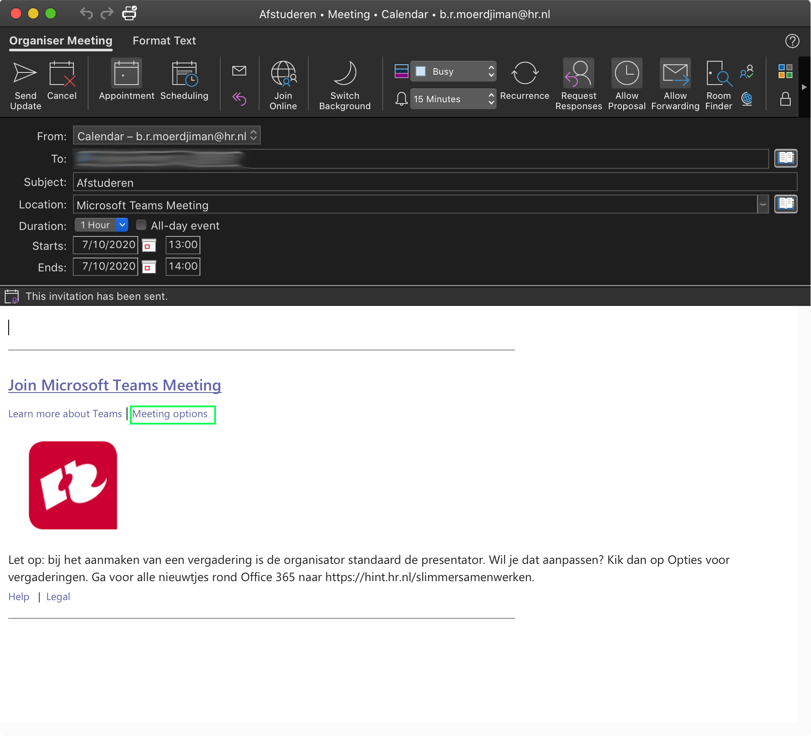

MS Teams - Maak jezelf of iedereen Presenter
Maak een meeting aan.
Zorg ervoor dat je organizer bent.
Ga naar 'Manage permissions'
Om jezelf presenter te maken of iedereen.

Meeting Options
Selecter bij: Who can present? , Only Me of Everyone
 
Je bent nu 'Presenter' of iedereen is 'Presenter'
Dit betekent dat je niet op mute kan worden gezet. Daarnaast kan je iemand anders ook presenter maken.
 
Al een meeting aangemaakt via Outlook?
Is je meeting nog niet begonnen? Dan kan je van te voren al je meeting options aanpassen. 